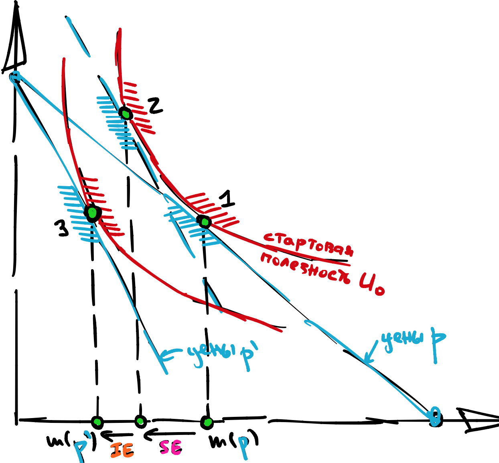
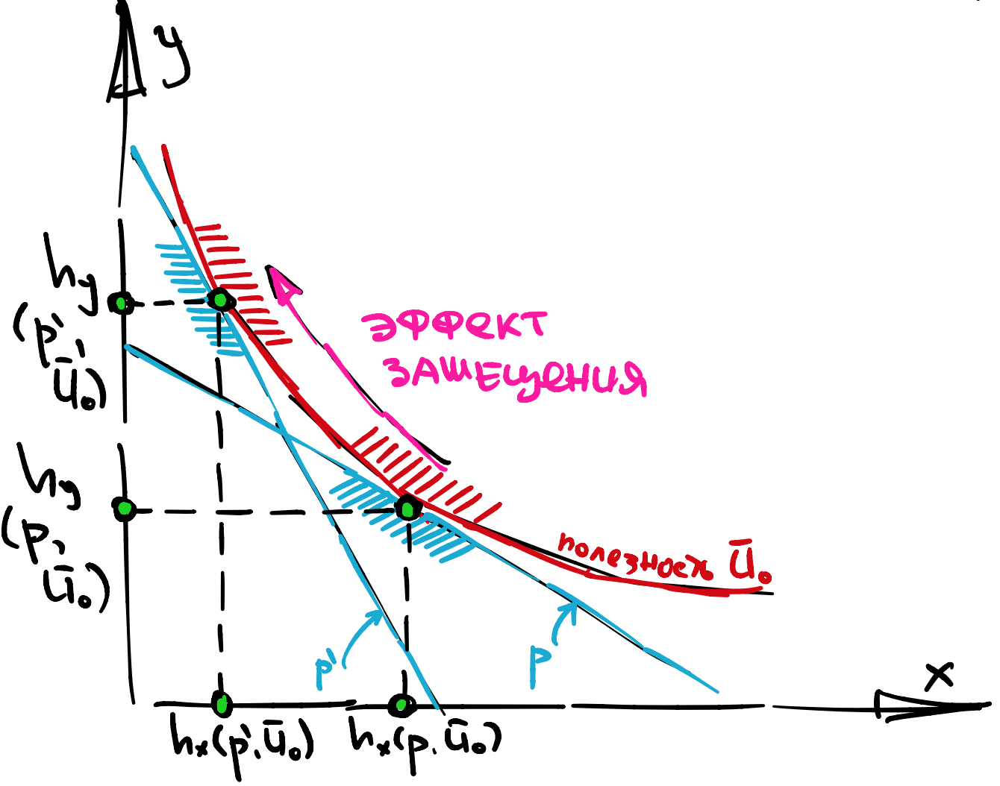
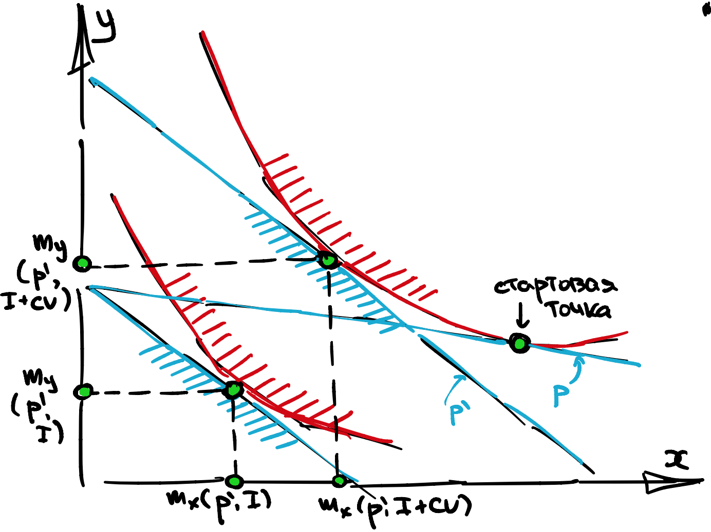
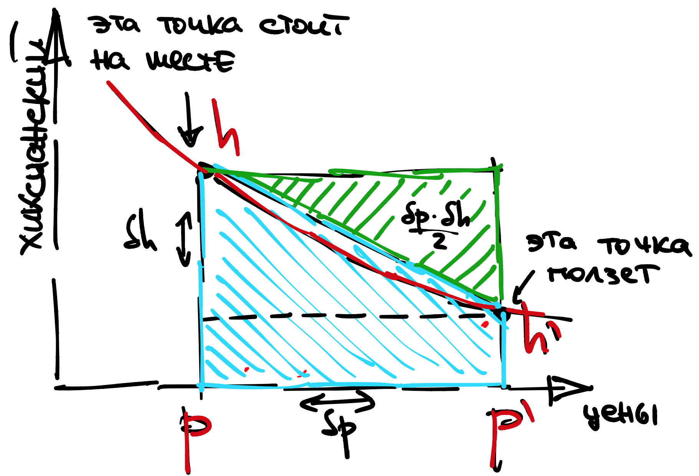
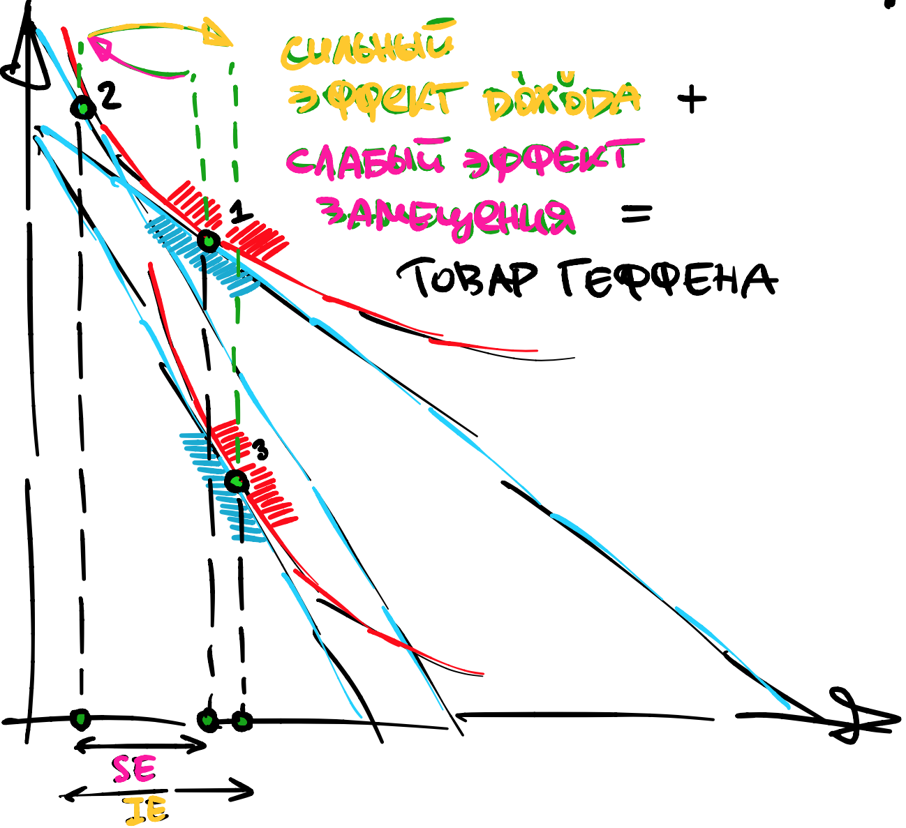

Четвертая лекция, часть 2#
Эффекты дохода и замещения#
Предположим, что цена на какой-то товар выросла \(p \to p'\). Тогда спрос на этот товар, скорее всего, упадет.
Само по себе это еще не проблема, потому что потребители могли просто переключиться на ближайший субститут. Но могло случиться и так, что достаточно близкого субститута нет, и потребители просто купили меньше, потому что… просто товар стал дороже. Первая ситуация считается в каком-то смысле нормальной. Вторая - нет, потому что наши потребители как будто обеднели.
Попробуем формализовать эту идею. Изменение спроса можно разложить на два эффекта: эффект дохода и эффект замещения. Что это за эффекты?
эффект замещения (SE) – это “катание” бюджетной линии вдоль кривой безразличия
эффект дохода (IE) – это “параллельное смещение” бюджетной линии
Почему всегда можно разложить? См. иллюстрацию:
{kind=link}
Есть также общий эффект (TE), он равен сумме эффекта замещения и эффекта дохода и представляет собой просто стандартное изменение маршаллианских спросов:
Поскольку маршаллианский спрос, как правило, наблюдаем, то можно считать, что общий эффект всегда известен. Неизвестно его разложение на эффект дохода и замещения.
Эффект замещения#
Геометрически это выглядит как “катание”, см. иллюстрацию.
{kind=link}
Эффект замещения есть, по сути, приращение хиксианского спроса при полезности зафиксированной на изначальном уровне.
Эффект замещения всегда отрицательный (неположительный, если быть точным), если он по своей цене, потому что мы доказали, что \(\nabla^2 E \leqslant 0\).
Эффект дохода#
Геометрически это выглядит как “параллельное смещение”, см. иллюстрацию.
{kind=link}
Эффект дохода есть разница между общим эффектом и эффектом замещения, именно так его надо считать. Однако сам по себе он не представляет большого интереса. Вообще не очень понятно, зачем вычислять кусок спроса, за который отвечает эффект дохода.
Гораздо интереснее понять, какому изменению бюджета соответствует эффект дохода? Тогда при любом изменении цен мы можем сказать насколько мы “ограбили” того или иного потребителя в рублях.
Как сосчитать это изменение бюджета?
Это же компенсирующая вариация \(CV\)!
Матрица Слуцкого#
Сфокусируемся на уравнении, связывающем Хиксианский и Маршаллианский спросы:
Помните ли вы условия для Дуальности?
Строго выпуклая задача + локальная ненасыщаемость.
Вас, скорее всего, не учили матричному дифференцированию, но в данном случае оно работает примерно также, как и обычное:
Проблема в том, что и \(\frac{\partial m}{\partial I}\) и \(\vec h\) – это вектора длины \(n\), и, поэтому, мы должны подумать, в каком порядке мы их хотим перемножить. Есть два варианта: либо мы умножаем строку \(\frac{\partial m}{\partial I}\) на столбец \(\vec h\), либо мы умножаем столбец \(\frac{\partial m}{\partial I}\) на строку \(\vec h\). Один из этих вариантов даст число, а другой – матрицу. Тот вариант, который сохранит размерность объекта, и будет правильным матричным дифференцированием.
Однако это еще не все. В зависимости от того, что идет по строкам: координаты цен или координаты товаров – формула будет выглядеть по-разному. Например, если по горизонтали идут товары, то правильная форма:
Чтобы не запутаться, достаточно запомнить, что вектор \(h\) в правой части уравнения – это, на самом деле \(\nabla E\), то есть, он относится к ценам, которые идут по вертикали.
Кобб-Дуглас#
Есть много способов вывести матрицу Слуцкого для Кобба-Дугласа, но, пожалуй, самый естественный - это сосчитать руками Гессиан функции расходов. Напомним, что
Тогда
Дифференцируя второй раз, получаем повторную производную:
И, конечно, смешанную производную:
Наконец, можно вывести матрицу Слуцкого:
Зачем нужны Матрицы Слуцкого?#
Во-первых, матрица Слуцкого – это в некотором смысле четвертая модель поведения потребителя. То есть вместо калибровки полезности или предпочтений, мы можем калибровать матрицу замещения.
Коэффициенты матрицы Слуцкого можно переписать в терминах эластичности, дохода и долей, каждый из которых достаточно легко оценивается в данных.
К примеру, если \(s_x\) и \(s_y\) – это доли товаров \(x, y\) в бюджете, то верхний диагональный элемент матрицы Слуцкого можно оценить как:
А диагоналъный элемент матрицы Слуцкого можно оценить как:
А во вторых - быстро считать эффект замещения.
SE в первом приближении#
Матрица Слуцкого указывает нам на приращение Хиксианского спроса.
То есть если эластичности оценены хорошо, то можно сказать, что приращение Хиксианского спроса – это приблизительно произведение матрицы Слуцкого на приращение цен. А приращение Хиксианского спроса – это и есть \(SE\).
CV во втором приближении#
Компенсированная вариация - это приращение функций расходов \(E\), то есть это площадь под \(\nabla E\). А это в свою очередь примерно площадь трапеции (на боку) с основанием \((p'-p)\) и сторонами \(h(p)\) и \(h(p')\), см. иллюстрацию:
{kind=link}
Сосчитаем приближенную площадь:
Мы только что доказали достаточно полезное на практике свойство:
Сравните ответ с разложением \(CV\) для Кобба-Дугласа, которую мы вывели раньше.
Парадокс Гиффена#
В конце 19 века случился (очередной) кризис экономической мысли. Все как один считали, что кривые спроса обязательно убывающие по своей цене. Это было логично, но формального доказательства никто не мог дать. Затем именитые экономисты (такие как Маршалл) обратили внимание на так называемый “Парадокс Гиффена”.
Парадокс Гиффена заключается в том, что для некоторых товаров, которые пользовались популярностью у бедных: картофель и дешевый хлеб – наблюдалась прямая зависимость между ценой и спросом. Похожая зависимость иногда прослеживается для спроса на рис в современном Китае.
Разрешение парадокса осуществляется за счет анализа Хиксианского спроса и матриц Слуцкого.
Бесконечно малый анализ#
Обратим внимание еще раз на эластичность Хиксианского спроса по собственной цене, которую я назову \(\varepsilon^c_{x,p}\):
и перепишем ее так, чтобы маршаллианский спрос был слева:
Легко видеть, что если \(\varepsilon_{x,I} > 0\), то, поскольку \(\varepsilon^c_{x,p}\) всегда неположительный, и \(\varepsilon_{x,p}\) будет неположительный. А нам нужна положительная зависимость между \(x,p\). Соответственно, можно сделать следующий вывод:
Предположим, наоборот, что товар \(x\) инфериорный, то есть это товар низкого качества, тогда \(\varepsilon_{x,I} < 0\). Предположим также, что доля товара \(x\) в бюджете потребителя достаточно высока, то есть, \(s_{x}\) большой. Наконец, предположим, что для товара \(x\) нет близкого (чистого) субститута, то есть, \(\varepsilon^c_{x,p}\) близок к нулю.
Тогда может так случиться, что \(\varepsilon_{x,p}\) станет положительным.
\(\varepsilon^c_{x,p}\) называется эффектом замещения
\(\varepsilon_{x,I} \cdot s_{x}\) называется эффектом дохода
Получается, что
Глобальный анализ#
Анализ бесконечно малых показал, что должно случиться для того, чтобы маршаллианский спрос стал возрастать по собственной цене.
Рассмотрим теперь большое изменение в цене. Сильный отрицательный эффект дохода означает, что при сокращении дохода потребление товара (который мы рассматриваем) резко увеличивается. Слабый эффект замещения (он всегда отрицательный) означает, что при качении вдоль кривой безразличия спрос меняется не сильно.
Вместе эти два эффекта способны объяснить парадокс Гиффена, см. иллюстрацию.
{kind=link}
На этой иллюстрации эффект дохода (IE, переход от 2 к 3) большой и положительный. Эффект замещения (SE, переход от 1 к 2) маленький и отрицательный. Поэтому общий эффект (TE, переход от 1 к 3) отрицательный.
Мы объяснили парадокс Гиффена и на этом заканчиваем с теорией потребителя.